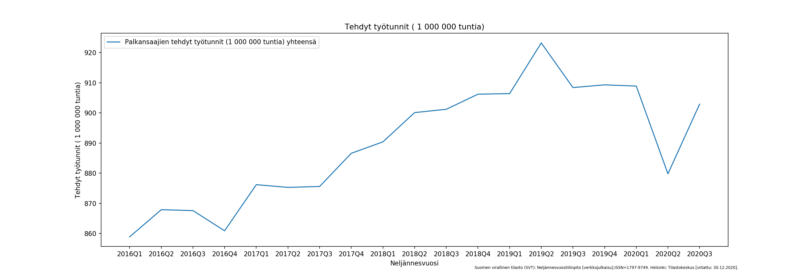
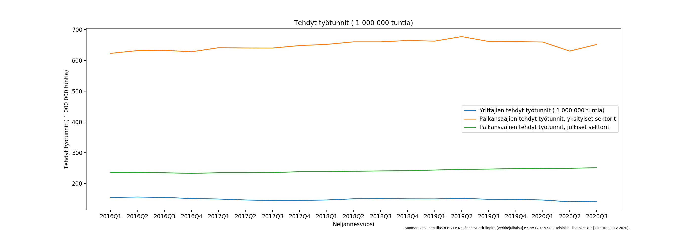
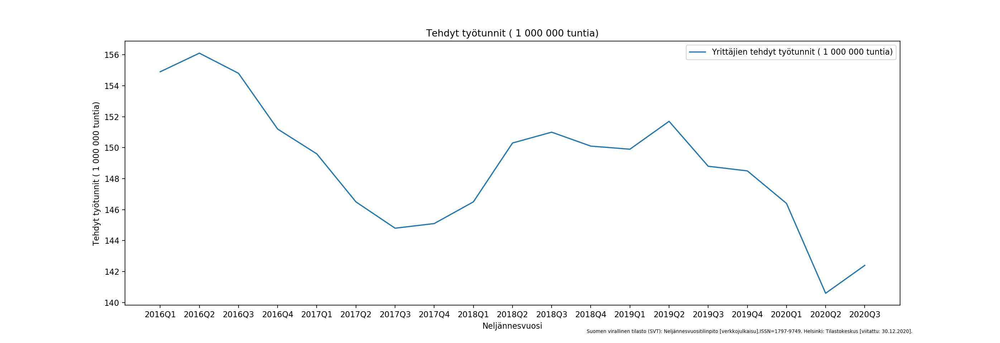
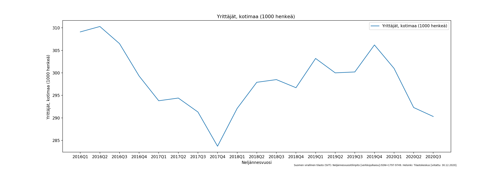
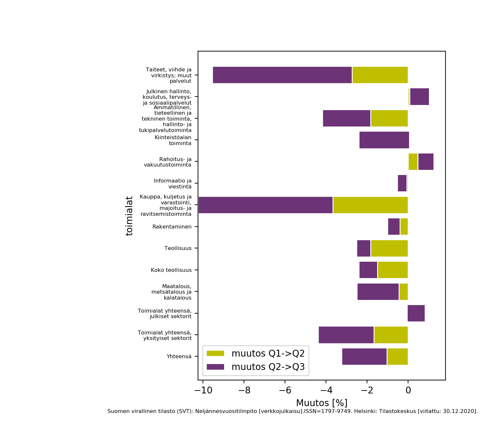

Korona on vaikuttanut vaihtelevasti Suomen kansantalouteen ja yritysten toimintaa. Tietolähteenä käytetty Tilastokeskus tarjoaa useita tilastoja koronakriisin vaikutuksista.
Yleisesti katsottuna palkansaajien tehdyt työtunnit kasvoivat tarkasteltavan ajanjakson 2016-2020 aikana 2019 Q2 asti. Vuoden 2020 alun koronakriisi näkyy piikkinä Q2 aikana, joka palautui kolmannen vuosineljänneksen aikana lähes Q2 tasolle.  Tilastona on käytetty kausitasoitettu ja työpäiväkorjattu sarja: 1 000 pers./1 000 000 h.
Seuraava kuvaaja esittää tehdyt työtunnit erotellen yrittäjät sekä yksityisen ja julkisen sektorin. Kuvaajan skaalaus estää näkemästä pienimmät vaihtelut tehdyissä työtunneissa, mutta yleisesti voidaan sanoa, että julkiset työtunnit pysyivät koronakriisin aikana lähestulkoon samaana. Yrittäjien työtunnit vähenivät hiukan vuoden 2020 Q2 aikana. Suurin pudotus näistä kolmesta ryhmästä on havaittavissa yksityisen sektorin tehdyissä työtunneissa jotka vähenivät 2020 Q2 aikana, mutta palasivat kolmannelle vuosineljännelle lähes Q2 tasolle.  Vaihtelut yrittäjien tekemissä työtunneissa vuosina 2016-2020 näkyy selvemmin seuraavasta kuvaajasta.  Myös yrittäjien määrä on vaihdellut tarkasteltavan ajankohdan aikana. Eli näyttää siltä, että 2017 jälkipuoliskolla oli vähemmän yrittäjiä ja siten vähemmän yrittäjien tekemiä työtunteja. Mielenkiintoista on kuitenkin koronan vaikutus yrittäjiyteen. Vuonna 2020 Q2 aikana yrittäjien tekemät työtunnit putosivat dramaattisesti, vaikka yrittäjien määrä ei pudonnut yhtä dramaattisesti. Kolmannella vuosineljänneksellä yrittäjien tekemät työtunnit kasvoivat hieman kun taas yrittäjien määrä laski. Voidaan siis havannoida, että yrittäjien tehdyt työtunnit putosivat dramaattisesti vuoden 2020 Q2 aikana kun taas tehtyjen työtuntien määrä kasvoi hieman 2020 kolmannekselle.  Kun tehdyt työtunnit jaetaan palkansaajien tai yrittäjien määrällä, voidaan havannoida että palkansaajien ja yrittäjien tehdyt työtunnit per tekijä kasvoivat 2% vuoden 2020 toiselta vuosineljännekseltä siirryttäessä kolmannelle.
Eri toimialojen tarkastelu osoittaa, että koronakriisin vaikutukset vaihtelevat toimialoittain. Alla oleva kuvaaja näyttää kuinka palkat ovat muuttuneet vuonna 2020. Palkka ja palkkio menojen muutos [%] vuonna 2020 summattuna muutos Q1->Q2 ja muutos Q2->Q3. Q2 ja Q2->Q3 summattuna " /> Kuvaaja näyttää että koronakriisi on vaikuttanut negatiivisesti aloihin Taiteet, viihde ja virkistys; muut palvelut-alaan (-3.4%) sekä erityisesti Kauppa, kuljetus ja varastointi, majoitus- ja ravitsemistoiminta-alaan (-4.3%). Rahoitus- ja vakuutustoiminta (+1,3%), julkinen sektori (+0.8%) sekä julkinen hallinto (+1.0%) kasvatti palkka ja palkkio menoja vuonna 2020.
Tehtävänä olis tarkastella julkisia lähteitä hyödyntämällä koronan vaikutuksia Suomen kansantalouteen ja yritysten toimintaan. Tarkastelu osoittaa, että muutokset ovat pienempiä julkisella sektorilla kuin yksityisellä. Koronakriisi on vaikuttanut siten, että yrittäjien määrää on erityisesti laskenut. Toimialatarkastelu osoitti, että koronakriisi on vaikuttanut erityisesti taide ja kaupan aloihin. Kun taas julkinen sektori sekä rahoitus- ja vakuutusala kasvoivat vuonna 2020.